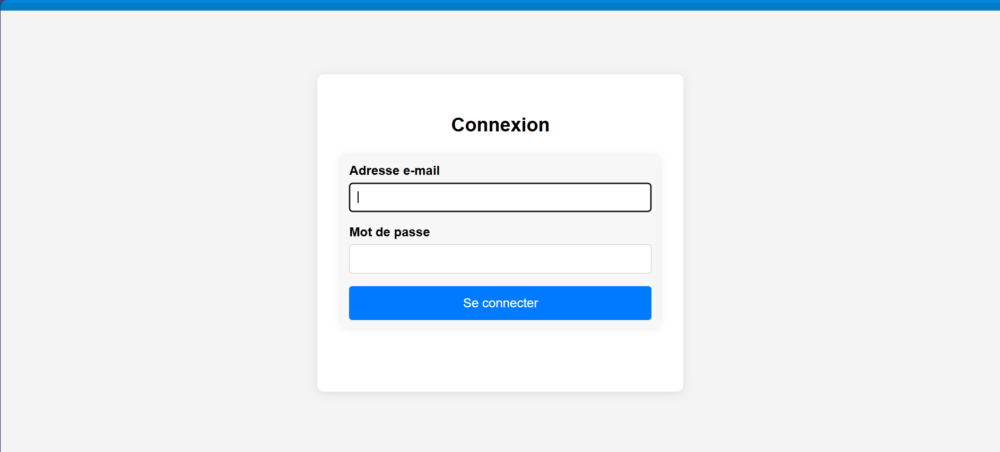
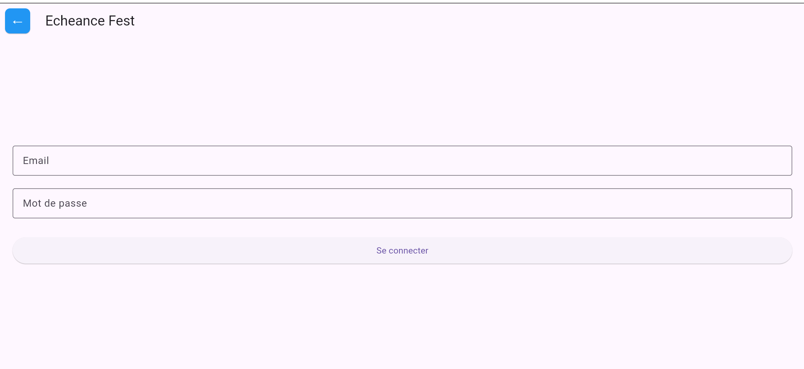
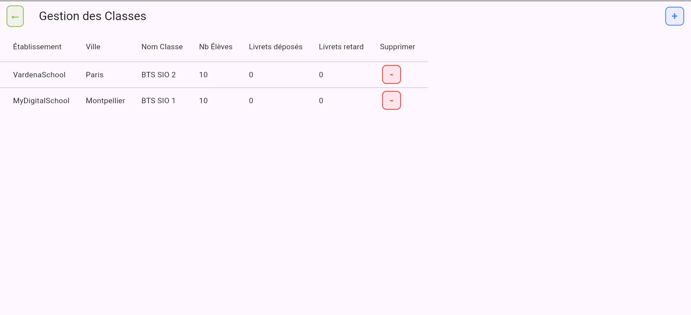
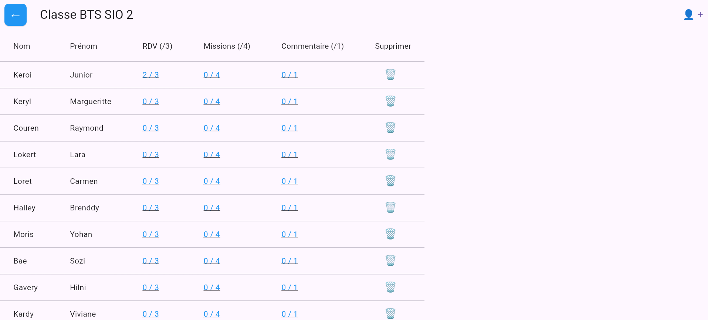
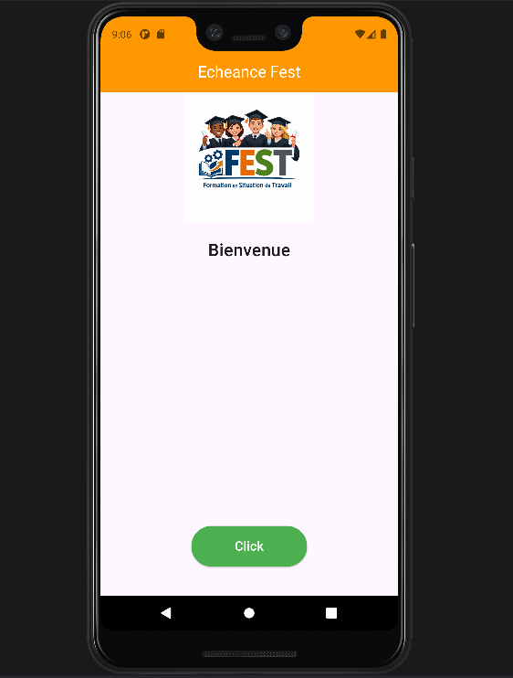
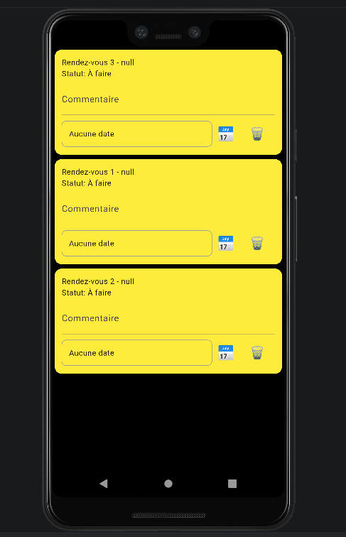

Projet : Jeu de combat Pokémon
Développement d'une application web interactive pour faire combattre deux Pokémon. Les Pokémon sont récupérés via l’API publique PokéAPI. L’utilisateur peut sélectionner les personnages, lancer différentes attaques et visualiser les animations de combat.
Compétences mises en œuvre
- Développer la présence en ligne
- Travailler en mode projet
- Mettre à disposition un service informatique
Ressources du projet
- HTML / CSS / JavaScript
- API REST : PokéAPI
- Images : captures d'écran du jeu
- Vidéo : démonstration du gameplay
Accès au code source
Voir code source

MaTodolist
Application PWA pour créer et gérer des tâches, avec notifications, sauvegarde locale, export/import, feedback utilisateur et service worker pour utilisation hors ligne.
Compétences mises en œuvre
- Gérer le patrimoine informatique
- Répondre aux incidents
- Mettre à disposition un service informatique
Ressources du projet
- HTML / CSS / JavaScript
- PWA / Service Worker
- Images : captures d'écran de l'application
- Vidéo : démonstration
Accès au code source
Voir code source


Anonym_Avis&Comment
Application web interne pour que les étudiants déposent des avis anonymes sur les cours ISDG. L'administration peut consulter et analyser les retours pour améliorer la qualité pédagogique.
Compétences mises en œuvre
- Gérer le patrimoine informatique
- Travailler en mode projet
- Mettre à disposition un service informatique
Ressources du projet
- HTML / CSS / JS / PHP
- PostgreSQL / Supabase
- GitLab : versionning et hébergement
- Images et vidéos de démonstration
Accès au code source
Voir code source


Portfolio de la classe BTS SIO
Site web vitrine réalisé en groupe pour présenter la classe de BTS SIO1 de l’ESICAD Montpellier. Le site permet de découvrir l’école, la formation, les élèves et d’accéder aux portfolios professionnels de chaque étudiant. Il inclut également une page de contact et une section dédiée à la conformité RGPD et aux normes informatiques utilisées dans le projet.
Compétences mises en œuvre
- Gérer le patrimoine informatique
- Répondre aux incidents et aux demandes d’assistance et d’évolution
- Développer la présence en ligne de l’organisation
- Travailler en mode projet
- Mettre à disposition des utilisateurs un service informatique
Ressources du projet
- HTML / CSS
- Google Maps (iframe)
- Formulaire de contact
- Images et portfolios des étudiants
Accès au site
Voir code source


Écheance Fest
Application web/mobile développée avec Flutter et Firebase permettant le suivi des élèves, des classes, des missions et des rendez-vous. Le référent pédagogique peut consulter les classes, accéder aux élèves et suivre leur progression en temps réel via une base de données centralisée.
Compétences mises en œuvre
- Gérer le patrimoine informatique
- Développer la présence en ligne de l’organisation
- Mettre à disposition un service informatique
Ressources du projet
- Flutter (Dart),Firebase, Firestore
- Android Studio
- GitHub
- Images
Accès au projet
Voir le code source



